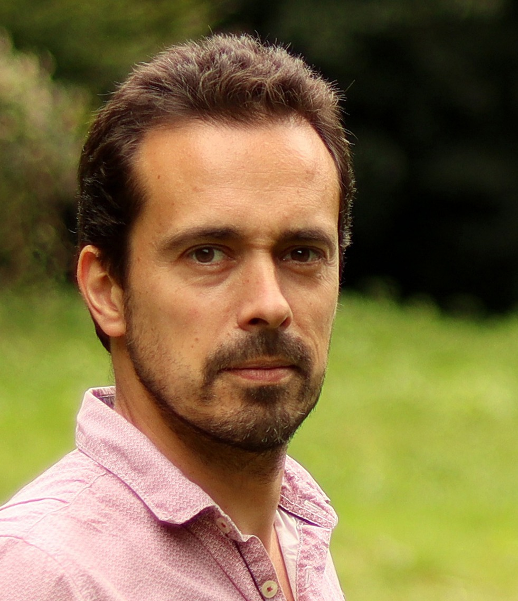

À propos
Compositeur, violoniste et arrangeur, Matthieu Roy partage ses activités entre composition, orchestration, direction et enseignement.

Matthieu Roy débute le violon à l’âge de 5 ans puis étudie la musique au CNR de Dijon avant d’entrer au CNSMD de Lyon, où il obtient ses prix d’Écriture, d’Orchestration et de Musique à l’image. Il obtient parallèlement une maîtrise de musicologie puis l’Agrégation de musique. Il est lauréat de plusieurs festivals de musique de film, notamment à Annecy et Aubagne.
Il partage ses activités entre l’enseignement, la direction d'orchestre, la composition et l’orchestration de musiques pour des films, des formations symphoniques, des ensembles de musique de chambre, des pièces de théâtre et des chansons. Il collabore notamment avec le quintette Magnifica, Les Siècles, le Théâtre du Rond-Point, l’Ensemble instrumental de Paris, la Musique des Gardiens de la Paix, le Cadre noir et l’Opéra Orchestre national de Montpellier.
Matthieu Roy se produit régulièrement en concert en tant que violoniste avec la chanteuse Virginie Seghers ou en tant que chef de l'orchestre de chambre du conservatoire de Sèvres-Meudon qu'il dirige depuis 2012.
Depuis 2009, il travaille régulièrement avec le compositeur Reinhardt Wagner sur des projets de spectacle, théâtre, chanson et cinéma.
Parcours
Activités
- Composition musique à l’image · scène
- Orchestration cinéma · théâtre · orchestre
- Arrangement chanson · classique · spectacle
- Direction orchestre du Conservatoire de Sèvres-Meudon
- Enseignement technologie instrumentale en section BTMM
Collaborations
Reinhardt Wagner · Radio France · Opéra Orchestre national de Montpellier · Théâtre du Rond-Point · Quintette Les Siècles · Magnifica · Cadre noir · Musique des Gardiens de la Paix · Virginie Seghers · Ensemble instrumental de Paris
Prendre contact